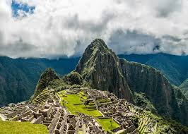

El Peru y su diversidad cultural


Machupichu - Ombligo del mundo

Declarada Patrimonio Cultural y Natural de la humanidad por la UNESCO, al ser considerada como importante centro religioso, político y administrativo de la época incaica.
Construida en el siglo XV, posiblemente a pedido del inca Pachacuteq, Machu Picchu está dividida en dos grandes sectores: el agrícola que comprende una vasta red de andenes o terrazas artificiales y el urbano, formado por diversas construcciones y plazas entre las cuales destacan el Templo del Sol, Templo de las Tres Ventanas, el Templo Principal y el Templo del cóndor.
Sus construcciones siguen el estilo clásico inca: edificaciones con muros de piedra pulidos en forma rectangular, unidas entre sí sin el uso de amalgamas, puertas y ventanas trapezoidales, resaltando algunos caracteristicas resaltantes.
-Machu Picchu estuvo interconectado con todo el Imperio Inca a través del Qhapac Ñan, conocida ruta de los caminos del inca.
- Su temperatura oscila entre los 6.2° y 29.5°, ya que está ubicado en una zona subtropical. Sus meses más lluviosos son de noviembre a marzo.
- Su majestuosa arquitectura comprende unas 140 estructuras en toda la ciudadela.
- La altitud promedio de la ciudadela es de 2450 m s.n.m.

Perfil del Autor
Scrollspy es un pulgin jQuery que hace seguimiento de ciertos elementos y en cual elemento esta centrada actualmente la pantalla del usuario. Nuestro demo principal de esto es nuestra tabla de contenidos en cada pagina de la documentación a lado derecho de la pagina. Al hacer clic en estos enlaces también se desplazará a la página de ese elemento.